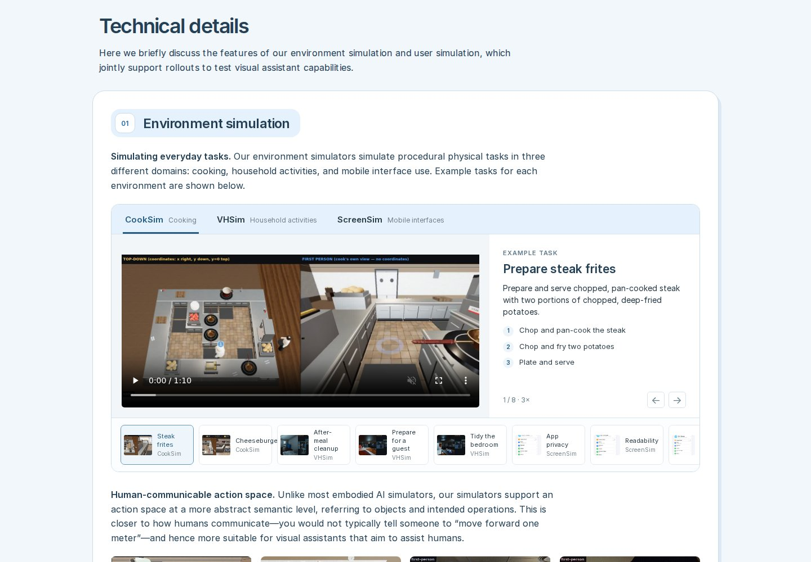
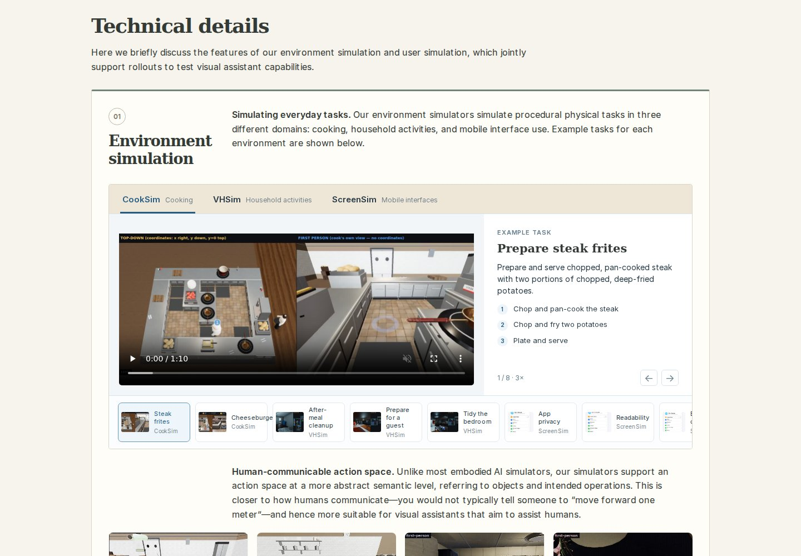
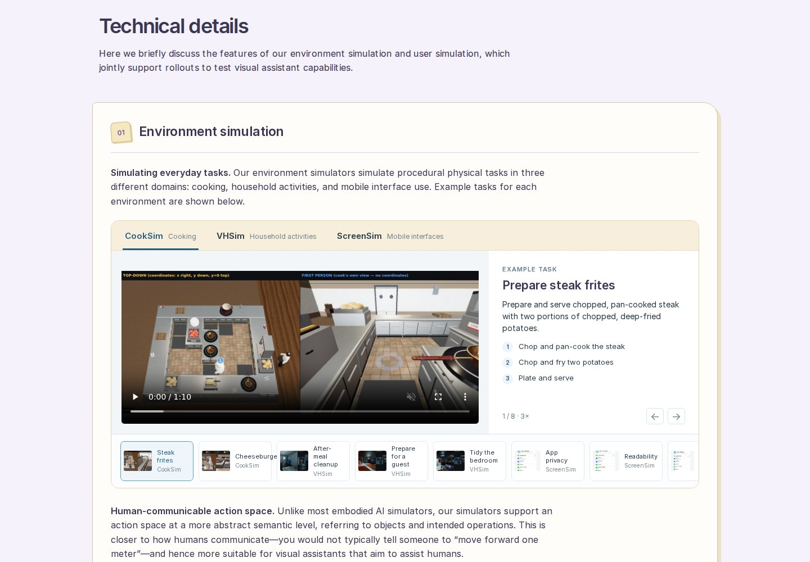

A · Blue AtelierClean type, soft blue chapter panels, and rounded labels. A light, friendly research studio.Full pageTechnical details
B · Research FolioWarm paper, serif headings, and chapter titles in the margin. The most editorial, article-like direction.Full pageTechnical details
C · Lilac NotebookPastel chapter sheets, outlined tabs, and subtle notebook details. The most playful of the three.Full pageTechnical details